骚姿势 | 对后台登陆页面的渗透测试

0x00 前言
有些朋友在渗透时扫描到后台登陆界面，却不知道如何入手。最近刚好在某公司做渗透实习，对目标固定的系统渗透有些体会。因此这里讲一下对网站后台登陆界面的渗透思路，希望能为大家提供一些帮助。
0x01 开始
本人在进入登陆界面时，一般都是先用万能密码什么的测下输入框有没有注入（现在很少见了）。如果没有，那就先拿admin，123456什么的测试下弱口令，不求运气爆棚一下就猜到密码。主要是看下回显，查看是否存在账号锁定策略，密码不正确，不存在此用户名等信息，以便于尝试遍历可能存在的用户名。没验证码就上爆破工具，有验证码的话看看能不能绕过,实在不行手工测几个账号密码碰碰运气。
0x02 爆破
如果没验证码阻碍，那爆破没什么好说的，拿个好字典，直接干就是了。
不过注意下有时密码传输会使用md5或者base64之类的加密，这时除了自己写脚本外，可以使用burpsuite的intruder模块内容。
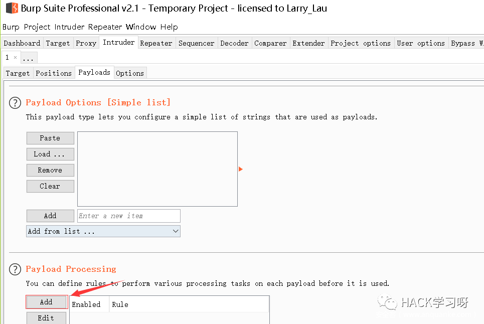
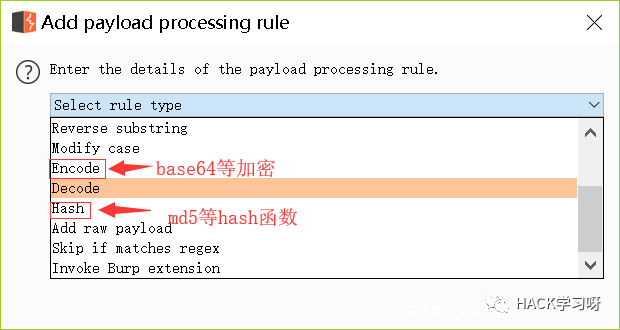
爆破的传统思路都是固定账号爆破密码，还有一种姿势是固定密码爆破用户名。比如使用固定密码123456，爆破常用用户名或者常用人名拼音。
0x03 扫目录
目录扫描也是一个存在惊喜的地方，说不定能扫描到后台未授权访问的链接、备份文件、编辑器、敏感信息等。
像后台登陆的网址看多了，常规的路径像www.xxx.com/admin/login.aspx(.php)
老司机甚至不用御剑什么的工具跑，就能直接猜到。
一般碰到下面这种情况，可采用fuzz大法。一层一层fuzz，尝试寻找可利用的信息。漏洞银行有一期衬衫的视频fuzz讲得很好。他用的工具是wfuzz，感觉不错，感兴趣的可以去看看。
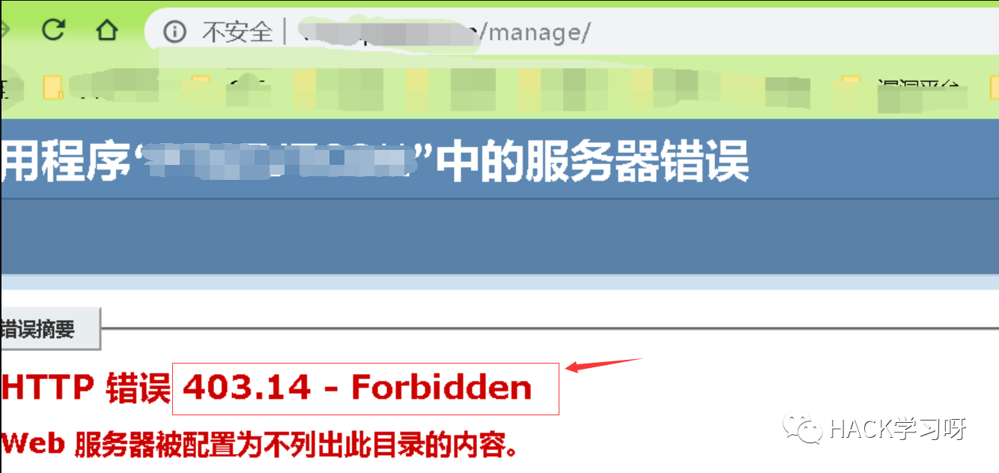
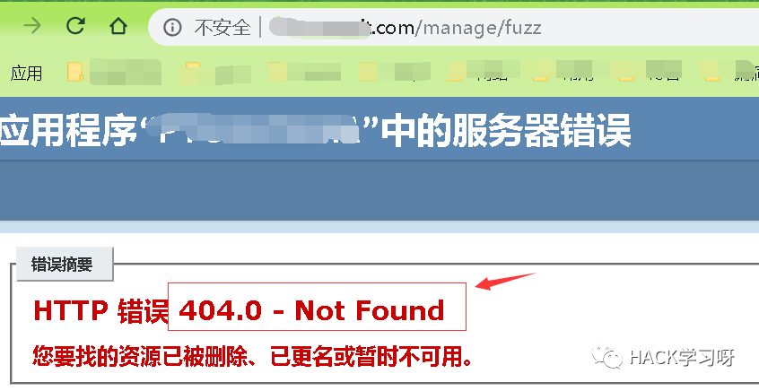
这里给大家讲一下我做授权渗透的一个案列:
一般给客户的后台系统做渗透，客户都会给个测试账号，除了测登陆界面外，还测下后台的功能模块。但这次当我问客户要账号密码时，客户回：你们不是要模拟黑客做渗透测试吗，那就自己打进去啊。( ╯□╰ )好吧，作为实习生的我也只能硬着头皮刚登陆界面了。
先看了下链接，发现是Java站，且链接是.do结尾，但struct2工具试了下没成功。
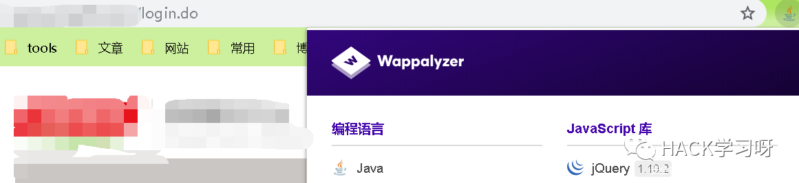
看了下登陆界面，有验证码，网站看去的版本也挺新的，感觉不太好搞。
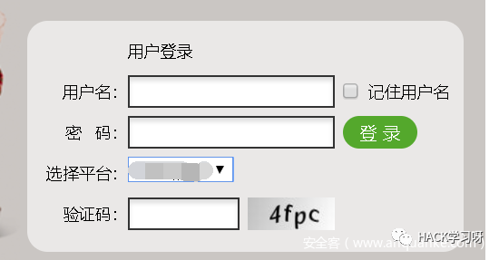
测下注入无果，于是抓包看下验证码是否可以绕过或者不变，结果这个验证码很称职，爆破不了。验证码辨认还算清楚，不过验证码识别，总觉得不太靠谱。。。等绝望了找不到洞再试吧。于是去扫了下目录。诶，发现有好东西。
首先扫到了一个services服务路径
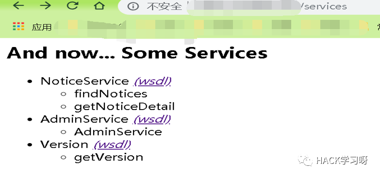
知道了Apache Axis组件的版本信息
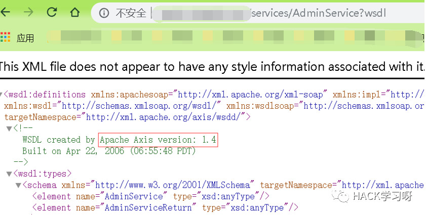
然后马上想到这个组件当时刚爆出一个RCE漏洞
poc链接：https://github.com/KibodWapon/Axis-1.4-RCE-Poc
结果试了下没成功。然后再尝试了四月份CNVD看到的RCE漏洞也无果。
还扫出了一个ckfinder编辑器
http://xxx.xxx.com/ckfinder/ckfinder.html
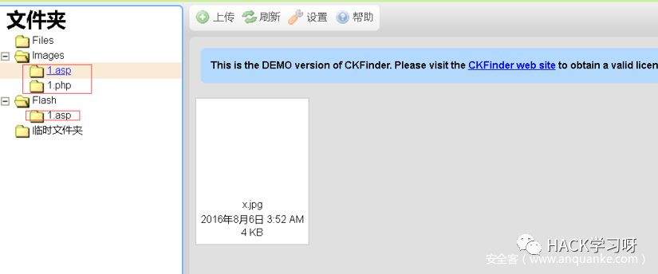
一看，我滴乖乖，难道已经有黑客搞进去了？
赶紧网上找了下这个版本有存在什么漏洞，并尝试文件上传绕过。但很遗憾，这个网站并不存在解析漏洞，利用不了，文件上传也没绕过。不过令人庆幸的是，黑客应该也没有利用成功。
又挖了一段时间，同事竟然说他拿shell了！
what?
发现他扫目录扫到了http://xxx.xx.com/manager/html
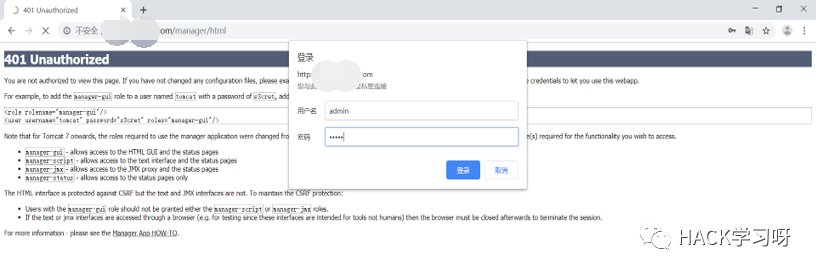
然后一个admin/123456弱口令进入tomcat后台，然后传war包成功拿到shell
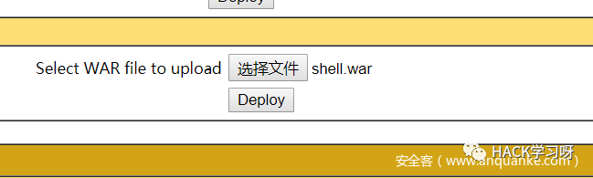
看了这波操作久久无语，看来我的字典太差，tomcat目录都没扫出来。还有弱口令漏洞，真的很无敌。
0x04 框架漏洞
对一些CMS，已经比较成熟了，漏洞确实不好挖。如果网上（乌云，seebug，搜索引擎等）的历史漏洞没有复现成功，那一般情况下就只能寻找下逻辑漏洞、网站管理员配置错误或者弱口令什么的。
对于一些不知名的框架，一般也可通过登陆界面底下的声明中找到开发公司和产品版本时间。
在网上找找此公司产品是否爆出过漏洞。若是开源的框架，还可下载源码进行代码审计寻找漏洞。
像java的站，登陆页面是.do或.action的网址。可尝试下 struts2 命令执行漏洞，本人一般使用安恒的S2漏洞验证工具。
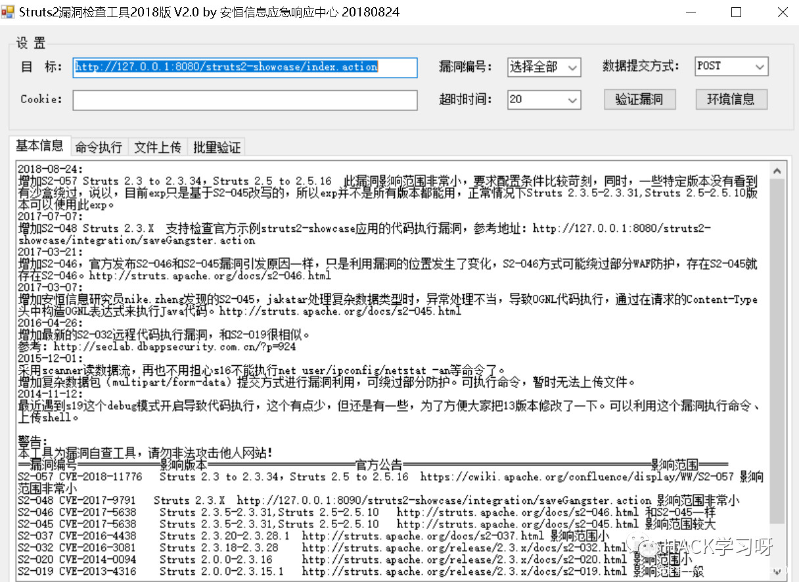
又如thinkphp的CMS，可尝试下是否存在相应版本的命令执行漏洞。本人曾在邮储银行的一个系统登陆界面挖到tp5命令执行漏洞拿到shell，补天评了1700元。
emmmm,当然厂商说漏洞无影响给拒了就是另一回事了……
0x05 弱口令
可能有些小伙伴对弱口令嗤之以鼻，觉得它没有技术含量，但其实不然，结合社工，它的作用和危害可能比其他漏洞更大，希望大家重视。
刚巧最近有去公安厅复测6月HW的漏洞，检测漏洞是否修复。几十份报告，原以为要花很长时间，但结果却是：差不多半小时就完成了，且部分时间是花在输入网址上（报告不给拷到自己电脑上，只能看着公安厅电脑的报告手打网址）。
耗时少的其中一个原因是漏洞有八、九层的漏洞都是弱口令，其中大部分漏洞还都是部委级别的系统，所以测的很快。虽然hw期间比较特殊，还是比例这么大还是挺能说明问题的。
以下是某大佬对14年底12306泄露密码的统计分析
哈哈，可以发现我国还是对数字情有独钟，国外的top100弱口令还是不适合我大天朝的国情。很少有password,football之类的英文密码。
密码中包含有 123456 数字的，出现 3236 次
密码中包含有 123 数字的，出现 11213 次
密码中包含有 520 数字的，出现 4549 次
密码中包含有 1314 数字的，出现 3113 次
密码中包含有 aini 的，出现 877 次
次数 密码
392 123456
281 a123456
165 123456a
161 5201314
157 111111
136 woaini1314
98 qq123456
98 123123
97 000000
93 1qaz2wsx
83 1q2w3e4r
80 qwe123
76 7758521
68 123qwe
63 a123123
56 woaini520
55 123456aa
52 1314520
52 100200
51 woaini
50 woaini123
50 123321
49 q123456
49 123456789
48 asd123
48 a123456789
48 5211314
48 123456789a
47 z123456
47 asd123456
45 a5201314
42 zhang123
41 aa123456
40 123123a
38 aptx4869
37 1qazxsw2
37 1q2w3e4r5t
36 5201314a
35 aini1314
35 1q2w3e
34 woaini521
34 q1w2e3r4
34 31415926
34 123456qq
33 a111111
33 520520
33 1234qwer
29 123456abc
29 111111a
29 110110
28 w123456
28 abc123
28 7758258
26 iloveyou
26 159753
25 qwer1234
25 a000000
24 zxc123
24 123qweasd
24 123654
23 qq123123
23 abc123456
23 123456q
22 qq5201314
22 12345678
21 456852
21 000000a
20 1314521
19 zxc123456
19 asdasd
19 as123456
19 666666
19 521521
19 112233
18 q1w2e3
18 abcd1234
18 aaa123
17 qazwsx123
17 qaz123
17 aaaaaa
17 a123321
17 12qwaszx
17 123000
17 11111111
16 zxcvbnm123
16 wang123
16 s123456
16 nihao123
16 love1314
16 caonima123
16 asdasd123
16 753951
16 5845201314
16 584520
16 159357
16 147258
16 1123581321
16 110120
15 hao123
15 a7758521遇到网络设备，基本像交换机、路由器、安全设备之类的，可以尝试一下默认密码
网上找到的，但忘了是哪个大佬发的了。
天融信防火墙，不需要证书 登录地址:https://192.168.1.254 用户名:superman 密码:talent 技术支持热线：8008105119
天融信防火墙，不需要证书 登录地址:https://192.168.1.254：8080 用户名:superman 密码:talent！23 遇到设备需要把旧设备配置备份下来，再倒入新设备基于console口登陆，用户名，密码跟web界面一致 system config reset 清除配置 save 保存 联想网御防火墙，需要证书（最好用IE浏览器登录）
登录地址:https://10.1.5.254:8889 用户名:admin 密码:leadsec@7766、administrator、bane@7766 技术支持热线：4008107766 010-56632666
深信服防火墙（注安全设备管理地址不是唯一的） https://10.251.251.251
https://10.254.254.254 用户名：admin 密码：admin 技术支持热线：4006306430
启明星辰 https://10.1.5.254:8889 用户名：admin 密码：bane@7766
https://10.50.10.45:8889 用户名：admin 密码：admin@123 电脑端IP：10.50.10.44/255.255.255.0 技术支持热线：4006243900
juniper 登录地址:https://192.168.1.1 用户名:netscreen 密码:netscreen
Cisco 登录地址:https://192.168.0.1 用户名:admin 密码:cisco
Huawei 登录地址:http://192.168.0.1 用户名:admin 密码:Admin@123
H3C 登录地址:http://192.168.0.1 用户名:admin 密码:admin 技术支持热线：4006306430
绿盟IPS https://192.168.1.101 用户名: weboper 密码: weboper 配置重启生效
网神防火墙GE1口 https://10.50.10.45 用户名：admin 密码：firewall 技术支持热线：4006108220
深信服VPN： 51111端口 delanrecover
华为VPN：账号：root 密码：mduadmin
华为防火墙： admin Admin@123 eudemon
eudemon Juniper防火墙： netscreen netscreen
迪普 192.168.0.1 默认的用户名和密码（admin/admin_default)
山石 192.168.1.1 默认的管理账号为hillstone，密码为hillstone
安恒的明御防火墙 admin/adminadmin
某堡垒机 shterm/shterm
天融信的vpn test/123456
0x06 社工
在我看来社工是很牛逼的一种攻击方式，有时可以四两拨千斤。
像教育站，登陆账号可能是学号，密码是身份证后六位。百度查xxx学校一卡通丢失，一般就能从某学生的失物启示找到学号。
或者在文章标题下，若存在作者名字，可能就是用户名
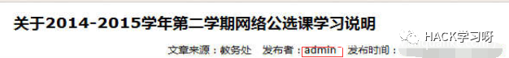
密码除结合管理员电话，qq，姓名等外，还可注意下网站的一些关键词。曾挖过一个弱口令漏洞，密码是网站域名+123，都不用生成字典就进后台了。
最近刚好参加某省护网，讲个例子：对某系统爆破admin用户的密码没成功，于是在联系我们处找到了管理员的一些信息，想生成社工字典试下运气。
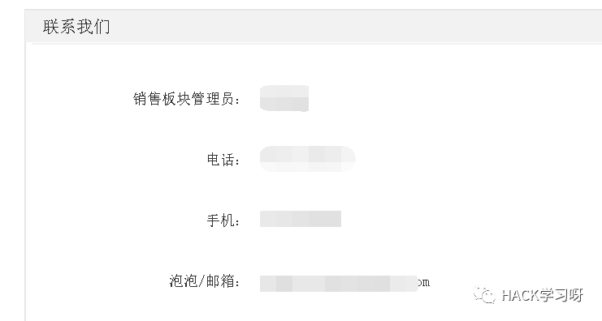
本想直接用社工密码生成工具生成字典爆破一下的，但突然想到注册处可以遍历用户名是否存在
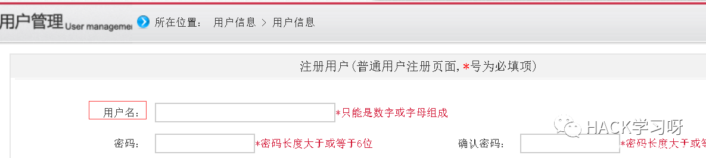
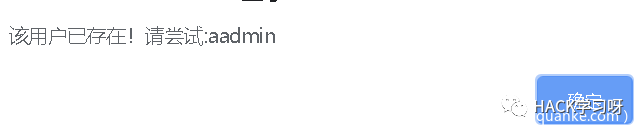
于是结合社工尝试几个账号，发现联系我们处的管理员的账号是姓氏首字母加名字全拼，然后一爆破，密码123456直接进去后台。并在后台的搜索处发现Sql注入，再用sqlmap神器的命令 —os-shell成功打开xpcmdshell，拿到系统权限。
社工密码字典生成,怕麻烦的可使用在线网站生成：http://tools.mayter.cn/
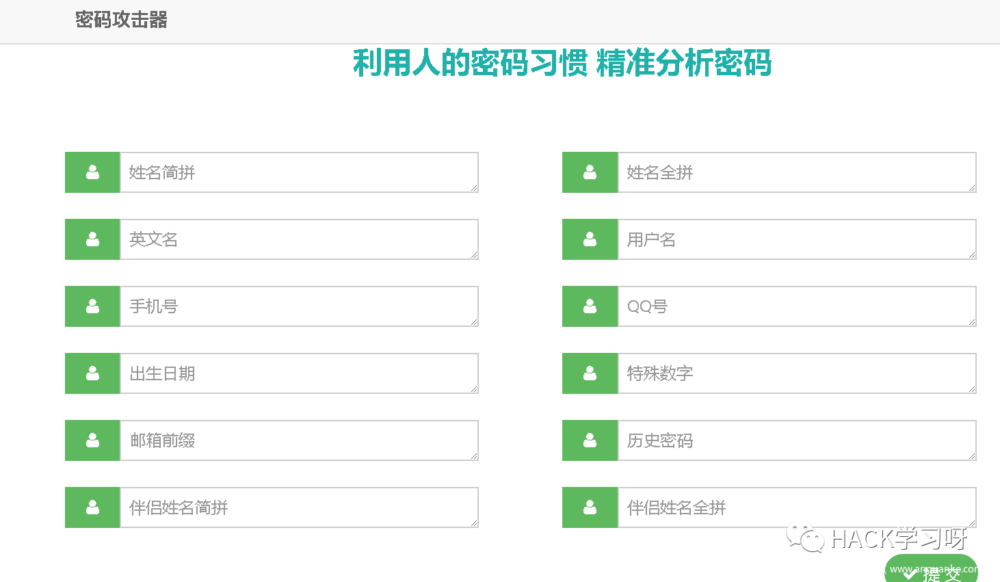
也可使用cupp这款工具，这是一款交互式的工具，使用比较简单
地址：https://github.com/Mebus/cupp.git
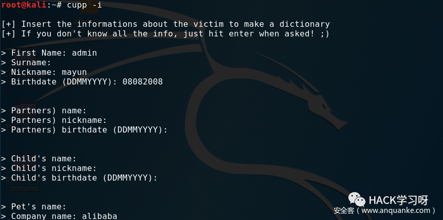
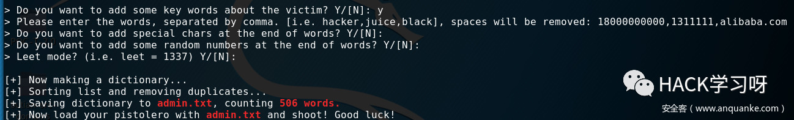
看看生成的密码：
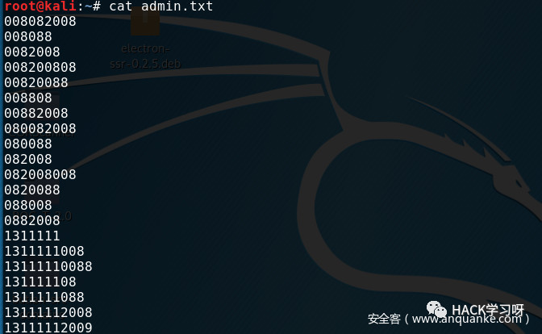
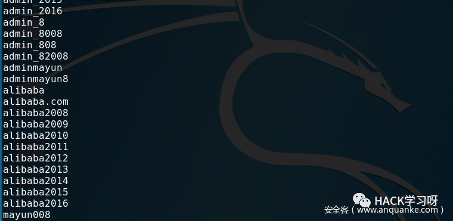
另一款是cewl，它通过爬行网站获取关键信息创建一个密码字典。
但我用了下，感觉生成的字典比较多冗余信息，很多关联不大的汉字都包含在字典中，个人觉得不是特别好用。
还有最近freebuf看了一篇文章，才发现hashcat这款爆破工具也能生成社工字典，感兴趣的朋友也可以去试试。
0x07 逻辑漏洞
逻辑漏洞是由于一些程序员未考虑到或者为贪图省事，而造成的逻辑上的漏洞，一般waf不容易拦截，因此和弱口令漏洞都是现在相对容易挖掘的一类漏洞。逻辑漏洞种类十分丰富，这里讲登陆框的逻辑漏洞，主要介绍一些技巧给大家拓宽一下思路，讲的不全请见谅。更详细的漏洞细节大家可以在网上查找资源（绝不是因为我懒）。
注册与忘记密码模块
云短信接受平台
相信有些朋友在测试注册模块的时候，会使用自己的手机号，而这就带来隐患：信息泄露，和短信骚扰。
这里给大家提供两个短信接受平台，让大家免去烦恼：
https://www.pdflibr.com/
http://www.smszk.com/
遍历已注册用户
这个上面的社工例子有讲，可查到用户是否存在。

任意用户注册
注册用户不需验证码认证即可注册成功的情况下，可使用工具发包，恶意批量注册用户。
修改发送包邮箱尝试覆盖注册
注册时显示某用户已注册；
在注册新用户时抓包，更改自己的账号信息为admin用户；
可能可以覆盖admin用户，重新注册成功。
任意密码重置
修改密码时使用其他人的手机号，可抓包更改成自己的手机号。自己手机收到验证信息并输入，可更改他人密码成功。
跳过验证
跳过验证步骤、找回方式，直接到设置新密码页面
这里直接用乌云的例子说明应该就懂了。
中国电信某IDC机房信息安全管理系统设计缺陷致使系统沦陷
http://www.anquan.us/static/bugs/wooyun-2015-098765.html
短信轰炸
短信轰炸，一般人可能抓包重放失败后就放弃了。这里有个技巧，
是从西门吹雪师傅博文里学到的绕过的姿势：
发送短信处一般每隔60秒才能发送一次
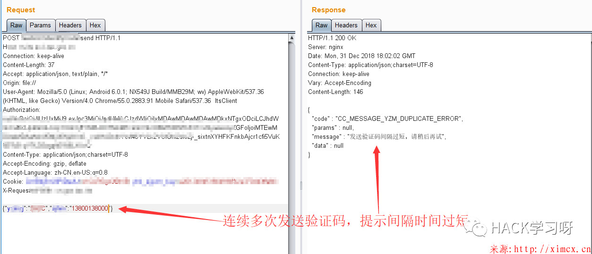
但若是发包时在手机号后加上一个空格、加号或换行符等特殊字符。然后重新发送，这时若发送成功，则说明可绕过限制。
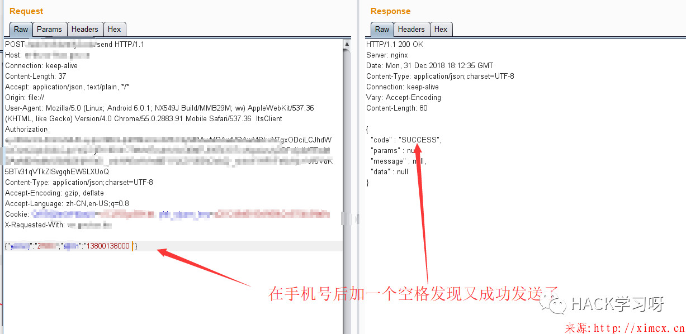
此时在intruder模块只要持续递增空格就可造成无限短信轰炸
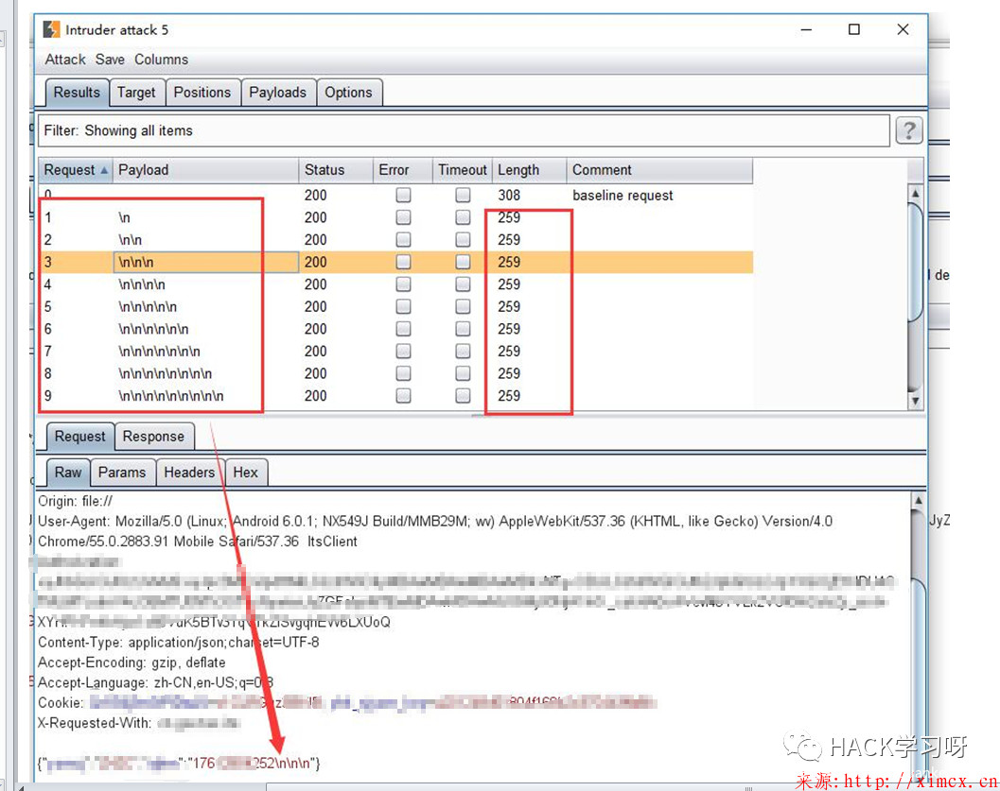
博文链接:http://ximcx.cn/post-143.html
越权
越权访问目录
可越权访问到后台路径，网站组件配置文件，备份文件等，当然扫目录字典也要好。
修改身份标识
更改成功登陆的用户的身份标识，可能就能越权访问到其他用户的页面。
例如：1、本人之前曾用test用户弱口令漏洞登陆成功，然后更改参数越权访问到admin用户；2、曾看过一漏洞：用户认证的token值是用户名加时间戳的md5值，而恰好数据包某处就有返回用户名加时间戳，然后更改时间戳前的用户名，md5后加在token上成功越权到其他用户上（这种漏洞一般需要细心查找登陆时身份认证参数的规律）
之前的任意密码重置等漏洞，其实也是修改用户身份标识，系统认证机制不完善导致漏洞出现。
抓返回包
在登陆时返回包可能返回用户敏感信息，此时改一改参数说不定还能越权查到其他用户信息。
或注册、找回密码发送短信邮箱时，可能直接返回验证码等
在返回包里，更改下参数为true、success、1，可能就能未授权进入后台
1.登陆抓包，点击右键，抓取返回
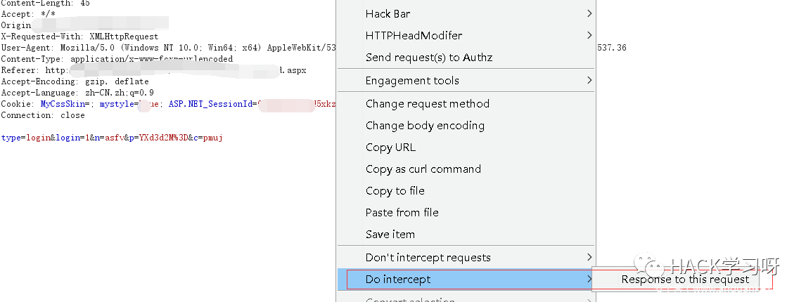
2.观察返回的参数
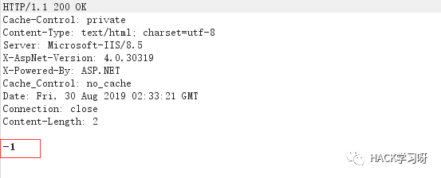
3.更改参数
4.成功进入后台
禁用js
曾经碰到过一个站点，能未登陆访问后台首页，但再次点击就会退出到登陆页面。此时禁用js，然后成功访问部分功能模块，成功利用文件上传拿到webshell。
因为有些网站的Url跳转是由前端js控制，这时禁用js后说不定就能成功访问。
下面是火狐的一个禁用js的插件
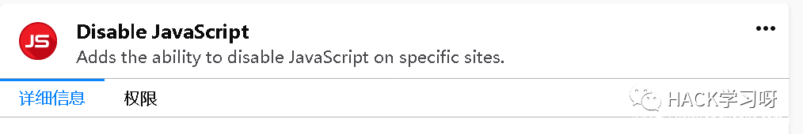
0x08 看网站源码信息
当你思路枯竭的时候不妨看看源码，它是一块宝藏，说不定就能在里面发现惊喜。有些程序员会把后台的功能链接放在前端源码中,说不定就存在未授权访问，甚至有些奇葩程序员在前端代码存放测试的账号密码。
首先给大家推荐一款工具，很强大：JSFinder
链接：https://github.com/Threezh1/JSFinder
这是一款在网站的js文件中提取URL，子域名的工具，用在后台登陆界面抓取一些敏感的js文件效果也很不错，我曾用它抓取过网站后台的一个插件源码，后台的功能链接，敏感信息，接口链接（存在xss，注入）等等。我同学还说过burp也有抓js的插件，但可惜我没找到，用这款也差不多够用了。
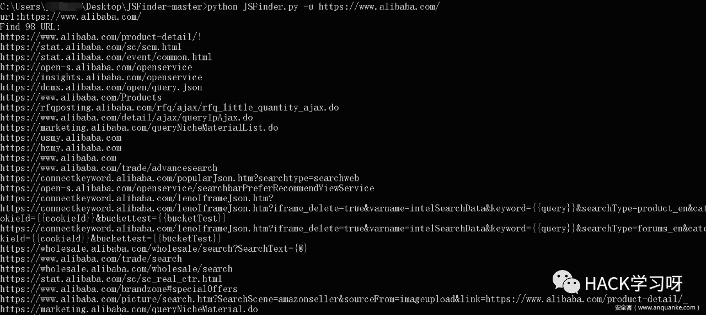
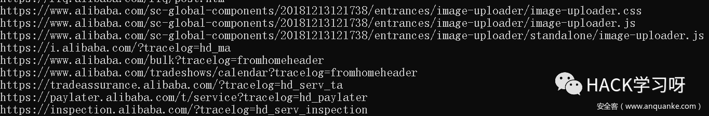
这里讲一下乌云的一个案例，具体链接忘记了，就讲一下思路：
洞主之前发现了一个漏洞，提交后，等过一段时间再去瞧下那个站，发现系统大变样，连url的路径都改了，已经修复了吗？
但是当洞主右键查看源代码时，发现还保留着之前旧系统的链接和代码，有的只是注释了而已，关键是漏洞竟然还没修？！tql，这种开发建议直接祭天。
看js代码，甚至一些图片的链接，说不定就有一番意外的收获。比如R3start大佬的一篇博文中讲的就很精彩
从JS信息泄露到Webshell
[http://r3start.net/index.php/2019/07/15/546]
文章的思路是：
作者进行渗透时，在一个图片链接中发现了一个三级子域名，删掉URl、直接访问根路径发现了一个title是某管理平台的页面。
但页面无法正常加载，故进行目录扫描得到后台地址和后台js压缩包，然后在源码的某处JS代码中发现了多个可登录的账号。
尝试弱口令无果后，从js压缩包查到了默认密码规则。成功登陆一个普通用户，但发现权限并不大。
然后通过js代码寻找获取到了别的接口地址，发现存在越权漏洞，通过JS接口越权访问到活动管理页面获取到管理员的登陆账号。
最后找上传点，抓包改后缀拿shell一气呵成。
引用R3start师傅的一句话：
右键查看JS源码，你可能会发现… 被注释的账号密码、接口、token、真实IP、开发环境…. 永远不知道程序员在JS中给你留下了什么样的惊喜。
0x09 总结
上面的内容比较杂，篇幅也比较长，所以有些地方就没有展开来讲。有些地方可能讲得比较简略模糊，请大家见谅，如果有疑惑可以联系我。
顺便说下感想：
这段时间的安服实习对我带来很大的帮助，面对一些系统目标固定，不能横向渗透。C段、端口扫描、子域名挖掘等信息收集都做不了，只能硬着头皮怼目标。而做安全服务经常碰到的就是后台登陆界面，怼着怼着就成长了，毕竟孰能生巧。
虽然渗透比较艰难，但也培养了我的漏洞挖掘能力。反思下自己以前挖漏洞，都是走马观花，面对信息收集来的一大堆资产，都是随便测下就结束，并没有深入且细心地去寻找漏洞，导致之前的SRC挖掘之旅十分困难。因此希望新手在挖洞时能够更加细心，特别是挖掘SRC时，有时就得花时间一个参数一个参数去”怼”，才能有所收获。要相信，大力出奇迹！

参考来源:安全客
作者：yida223
点击阅读原文，即可跳转
如有侵权，联系删除